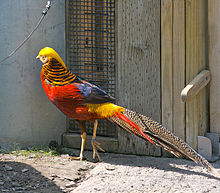
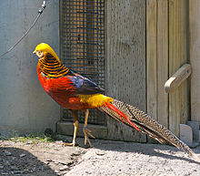

| Golden Pheasant | |
|---|---|
|  | |
| Male at Columbus Zoo, Powell, Ohio, USA | |
| Conservation status | |
| Binomial name | |
| Chrysolophus pictus (Linnaeus, 1758) |
| Golden Pheasant | |
|---|---|
|  | |
| Male at Columbus Zoo, Powell, Ohio, USA | |
| Conservation status | |
| Binomial name | |
| Chrysolophus pictus (Linnaeus, 1758) |
The Golden Pheasant or "Chinese Pheasant", (Chrysolophus pictus) is a gamebird of the order Galliformes (gallinaceous birds) and the family Phasianidae. It is native to forests in mountainous areas of western China but feral populations have been established in the United Kingdom and elsewhere.
The adult male is 90-105 cm in length, its tail accounting for two-thirds of the total length. It is unmistakable with its golden crest and rump and bright red body. The deep orange "cape" can be spread in display, appearing as an alternating black and orange fan that covers all of the face except its bright yellow eye, with a pinpoint black pupil.
Males have a golden-yellow crest with a hint of red at the tip. The face, throat, chin, and the sides of neck are rusty tan. The wattles and orbital skin are both yellow in colour, and the ruff or cape is light orange. The upper back is green and the rest of the back and rump are golden-yellow in colour. The tertiaries are blue whereas the scapulars are dark red. Another characteristic of the male plumage is the central tail feathers which are black spotted with cinnamon as well as the tip of the tail being a cinnamon buff. The upper tail coverts are the same colour as the central tail feathers. Males also have a scarlet breast, and scarlet and light chestnut flanks and underparts. Lower legs and feet are a dull yellow.
The female (hen) is much less showy, with a duller mottled brown plumage similar to that of the female Common Pheasant. She is darker and more slender than the hen of that species, with a proportionately longer tail (half her 60–80 cm length). The female's breast and sides are barred buff and blackish brown, and the abdomen is plain buff. She has a buff face and throat. Some abnormal females may later in their lifetime get some male plumage. Lower legs and feet are a dull yellow.
Both males and females have yellow legs and yellow bills.
Despite the male's showy appearance, these hardy birds are very difficult to see in their natural habitat, which is dense, dark young conifer forests with sparse undergrowth. Consequently, little is known of their behaviour in the wild.
They feed on the ground on grain, leaves and invertebrates, but roost in trees at night. While they can fly, they prefer to run: but if startled they can suddenly burst upwards at great speed, with a distinctive wing sound.
Although they can fly in short bursts they are quite clumsy in flight and spend most of their time on the ground. Golden Pheasants lay 8-12 eggs at a time and will then incubate these for around 22–23 days. They tend to eat berries, grubs, seeds and other types of vegetation.
The male has a metallic call in the breeding season.
The Golden Pheasant is commonly found in zoos and aviaries, but often as impure specimens that have the similar Lady Amherst's Pheasant in their lineage. The birds illustrated herein are typical. For example, one picture below shows subtle signs of a hybrid in the dark face, and in the yellow extending into what should be a pure dark red flank (where in the Amherst, the white flank would meet the green breast feathers in this area).
There are also different mutations of the Golden Pheasant known from birds in captivity, including the Dark-throated, Yellow, Cinnamon, Salmon, and Snowflake.

{kind=link}